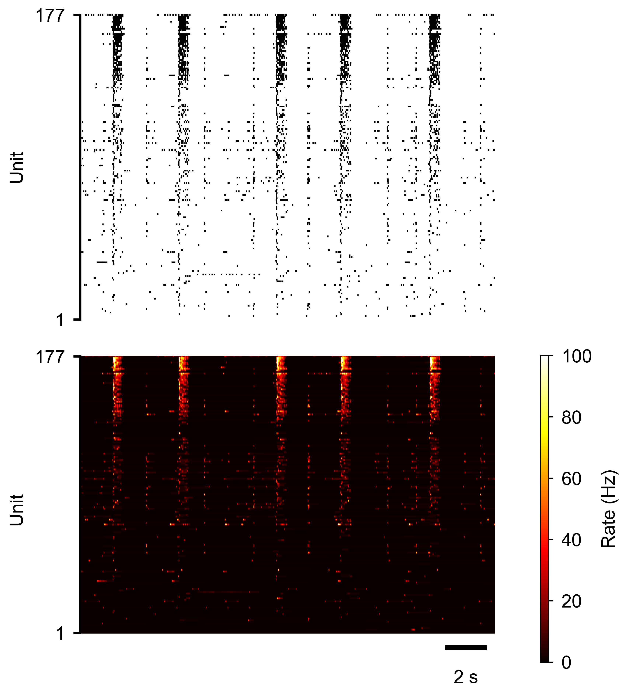
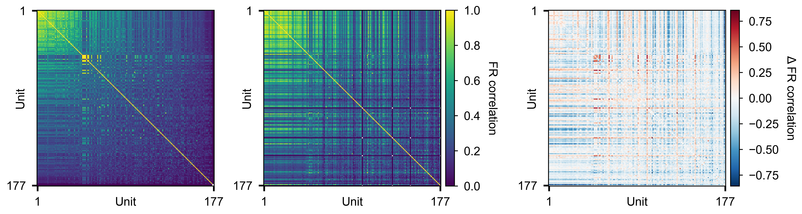
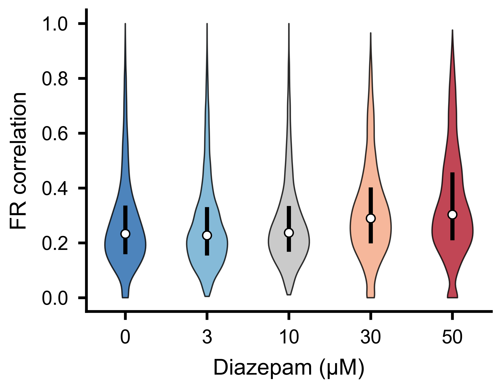

Firing Rates and Correlations
This guide covers how to compute instantaneous firing rates from spike trains,
build pairwise firing-rate correlation matrices, and compare correlation
structure across experimental conditions. By the end you will be able to go from
a SpikeData object to publication-ready correlation heatmaps
and distribution plots.
All examples assume you already have a SpikeData object
loaded. See the Quick Start for how to create one.
from spikelab import SpikeData, RateData
Instantaneous Firing Rates
Mean firing rates (sd.rates()) give one number per unit, but many analyses
require a time-resolved estimate. SpikeLab computes instantaneous firing rates
by interpolating the inverse inter-spike interval at arbitrary time points and
smoothing with a Gaussian kernel:
import numpy as np
# Define the time grid (e.g. every 1 ms across the recording)
times = np.arange(0, sd.length, 1.0)
# Compute instantaneous firing rate matrix
fr_matrix = sd.resampled_isi(
times,
sigma_ms=10.0, # Gaussian smoothing kernel width (ms)
)
# fr_matrix.shape == (sd.N, len(times))
The result is a (N, T) NumPy array where each row is one unit’s smoothed
firing rate over time. To work with this data using SpikeLab’s higher-level
tools, wrap it in a RateData object:
rd = RateData(fr_matrix, times)
print(rd.N) # number of units
print(rd.inst_Frate_data.shape) # (N, T)
RateData carries the rate matrix together with its time
axis, supports unit and time subsetting (rd.subset(), rd.subtime()),
and provides the correlation and dimensionality-reduction methods described
below.
{kind=link}

Spike raster (top) and instantaneous firing rate heatmap (bottom) for an MEA recording. Each row in the heatmap is one unit; colour intensity reflects firing rate.
Pairwise Firing-Rate Correlations
A natural next step is to ask how similarly pairs of units modulate their
firing over time. get_pairwise_fr_corr() computes the
cross-correlation between every pair of units’ instantaneous rate traces:
corr_matrix, lag_matrix = rd.get_pairwise_fr_corr(
max_lag=10, # maximum lag offset to search (in time bins)
n_jobs=-1, # parallel threads (-1 = all cores)
)
Both return values are PairwiseCompMatrix
objects wrapping an (N, N) NumPy array:
corr_matrix— peak cross-correlation coefficient for each pair. The diagonal is always 1 (self-correlation).lag_matrix— lag (in bins) at which the peak correlation occurs. The diagonal is always 0 (self-lag).
You can extract the lower triangle for summary statistics:
# 1-D array of all unique pairwise correlations
corr_values = corr_matrix.extract_lower_triangle()
print(f"Median pairwise correlation: {np.median(corr_values):.3f}")
Correlation Matrices
Visualising the full (N, N) correlation matrix as a heatmap reveals
clusters of co-active units. Use the built-in
plot_heatmap() utility:
from spikelab.spikedata.plot_utils import plot_heatmap
fig, ax = plot_heatmap(
corr_matrix.matrix,
vmin=-1,
vmax=1,
cmap="RdBu_r",
xlabel="Unit",
ylabel="Unit",
cbar_label="Correlation",
)
Sorting units before plotting (e.g. by electrode position, firing rate, or hierarchical clustering) can make block structure more apparent.
{kind=link}

Pairwise firing-rate correlation matrices for multiple experimental conditions. Warm colours indicate positively correlated unit pairs; cool colours indicate anti-correlated pairs.
Cross-Condition Comparisons
When you have recordings from multiple conditions (e.g. baseline vs. treatment, or successive days in culture), comparing the distributions of pairwise correlations reveals changes in network coordination.
First, compute correlations for each condition:
# Assume sd_baseline and sd_treatment are SpikeData objects
times_base = np.arange(0, sd_baseline.length, 1.0)
times_treat = np.arange(0, sd_treatment.length, 1.0)
rd_base = RateData(sd_baseline.resampled_isi(times_base, sigma_ms=10.0), times_base)
rd_treat = RateData(sd_treatment.resampled_isi(times_treat, sigma_ms=10.0), times_treat)
corr_base, _ = rd_base.get_pairwise_fr_corr(max_lag=10)
corr_treat, _ = rd_treat.get_pairwise_fr_corr(max_lag=10)
Then visualise the distributions side by side using
plot_distribution():
from spikelab.spikedata.plot_utils import plot_distribution
import matplotlib.pyplot as plt
fig, ax = plt.subplots(figsize=(6, 4))
plot_distribution(
ax,
metric_data={
"Baseline": corr_base.extract_lower_triangle(),
"Treatment": corr_treat.extract_lower_triangle(),
},
ylabel="FR correlation",
show_violin=True,
show_box=True,
)
{kind=link}

Distribution of pairwise firing-rate correlations for two experimental conditions. Shifts in the median or spread indicate changes in functional network connectivity.
You can also threshold the correlation matrix and convert it to a NetworkX graph for graph-theoretic analysis:
G = corr_base.to_networkx(threshold=0.3)
print(f"Nodes: {G.number_of_nodes()}, Edges: {G.number_of_edges()}")
Temporal Trends and Stability
When comparing a metric across ordered slices (e.g. burst-aligned windows over
time), two utility functions in spikelab.spikedata.utils help quantify
whether the metric drifts or remains stable:
from spikelab.spikedata.utils import slice_trend, slice_stability
# values is a (S,) array — e.g. mean pairwise correlation per burst
slope, p_value = slice_trend(values)
cv = slice_stability(values)
slice_trend() fits a linear regression across
slices and returns the slope and its p-value. A significant slope indicates
that the metric is drifting over the course of the recording.
slice_stability() returns the coefficient of
variation (std / abs(mean)). Lower values indicate a more stable metric across
slices.
Further Reading
Spike Analysis — population rate, burst detection, and per-unit spike train metrics.
Quick Start — creating and loading
SpikeDataobjects.The full RateData API reference documents every method on
RateData.The
PairwiseCompMatrixAPI reference covers thresholding, masking, and graph conversion.